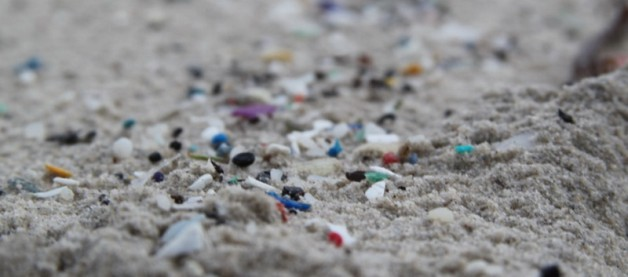
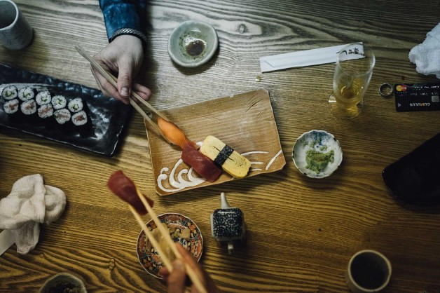
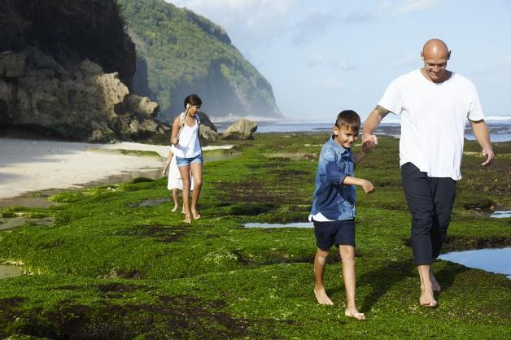
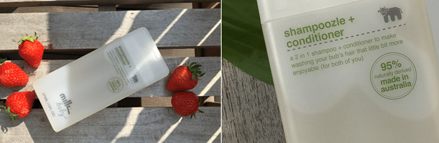

바이&기브
해양 환경 보호까지 생각하는 천연샴푸

유넵한국위원회의 해양보호 및 미세플라스틱 관련 활동을 지원하는 펀딩입니다
판매 수익금을 유넵한국위원외헤 전달하여 해양 환경 보호를 위해 사용합니다.

미세 플라스틱으로 오염된 바다
우리가 흔히 사용하는 치약, 바디워시, 화장품에는 폴리에틸렌 같은 석유화학 물질로 구성된 미세한 플라스틱 알갱이가 들어있습니다. 이 물질은 배수구 망을 통과할 만큼 작은 입자로, 바다에 흘러 들어가면 중금속 등의 유해물질을 흡수해 심각한 환경 오염과 인체에 유해한 성분들을 만들어내고 있습니다.

우리의 식탁을 향해 표류하는 미세 플라스틱
유해 물질을 흡수한 미세 플라스틱은 플랑크톤을 거쳐 먹이사슬을
올라가는동안 농축 과정으로 인해 독성은 몇 십 배로 증가하게
됩니다.
해외에서는 이미 미세 플라스틱의 심각성을 인지하고 환경단체, 기업,
국가 단위로 문제 해결을 위해 적극적으로 대응하고 있습니다. 하지만
미세 플라스틱 오염 평균 밀도가 세계 평균의 13배에 달하는
우리나라는 아직까지 관련 법안이 없습니다.

바다와 우리의 건강을 생각하는 천연샴푸
미세 플라스틱의 악영향이 눈에 보이지 않는다고 해서 결코 간과해서는
안됩니다. 화장품과 치약 등을 구매하기 전 미세 플라스틱 성분이
포함되어 있는지, 천연재료를 사용하고 있는지 체크해 보세요.
유넵한국위원회와 함께 깨끗한 바다를 위해 고민하는 밀크앤코는 미세
플라스틱을 사용하지 않고 호주 자연에서 추출한 천연 성분을 95% 이상
함유한 천연샴푸를 만듭니다. 밀크앤코는 더 많은 이들이 관심 갖고
그린라이프를 실천할 수 있도록 퓨어 캠페인을 진행하며, 판매
수익금은 유넵한국위원회에 기부되어 해양 보호에 사용 됩니다.
[리워드 안내]
* 모든 후원자에게 네이버페이 포인트 3%를 드립니다.
(목표 달성 시, 결제일 기준 일주일 이내 적립. 단, 추석연휴에는 그
다음주 지급됩니다.)
* 후원을 완료하여 결제가 진행된 후, 변심에 의한 후원 취소 및 교환이
불가합니다.
■ 25,000원 이상 후원 시
밀크앤코 샴푸+린스 2in1의 생딸기 샴푸 1개
